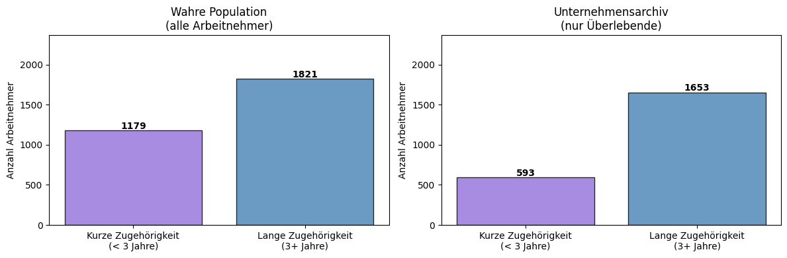
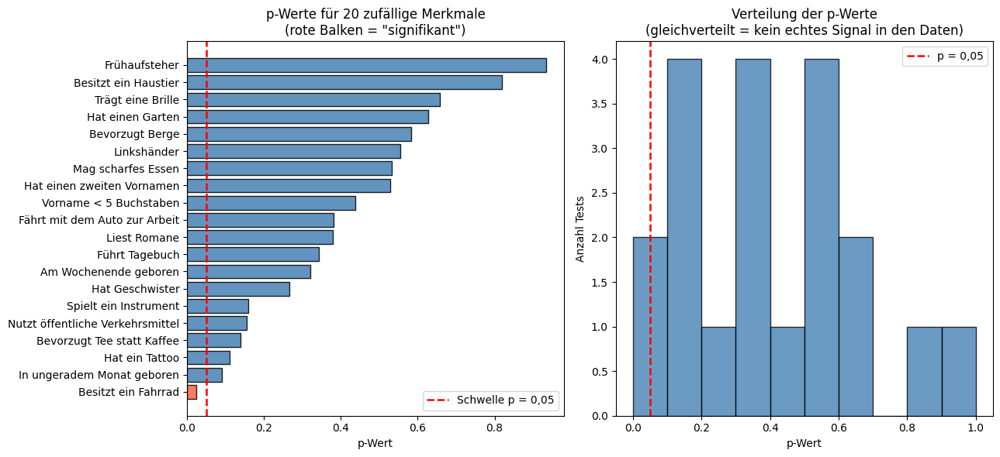

3. Weitere Verzerrungen: Survivorship Bias und P-Hacking#
Die vorherigen beiden Kapitel haben sich ausführlich mit der Verzerrung durch ausgelassene Variablen und der Stichprobenverzerrung beschäftigt. Verzerrungen treten jedoch in noch viel mehr Formen auf. Dieses Kapitel zeigt kurz zwei weitere Verzerrungen, die in der Forschung häufig vorkommen. Beide Abschnitte zeigen ein kompaktes, konkretes Beispiel, damit du das Muster in deiner eigenen Arbeit wiedererkennen kannst.
Teil 1: Survivorship Bias#
Was ist das?#
Stell dir vor, du untersuchst, was ein Restaurant erfolgreich macht, indem du nur Restaurants besuchst, die noch geöffnet haben. Jedes Restaurant in deiner Stichprobe hat überlebt, hat also bereits einen unsichtbaren Filter durchlaufen. Die Restaurants, die gescheitert sind (und vielleicht viele Eigenschaften mit den erfolgreichen geteilt hätten), sind schlicht nicht mehr da, um untersucht zu werden. Deine Schlüsse über “Erfolgsfaktoren” werden vollständig durch diesen unsichtbaren Filter geprägt.
Das ist Survivorship Bias: wenn deine Daten nur Datensätze von Einheiten enthalten, die einen Auswahlprozess überstanden haben, während die “Nicht-Überlebenden” stillschweigend ausgeschlossen werden. Das Ergebnis ist ein Datensatz, der erfolgreicher, fähiger oder extremer wirkt als die tatsächliche zugrunde liegende Population. Survivorship Bias ist damit ein Spezialfall der Stichprobenverzerrung, der entsteht, wenn der Auswahlprozess selbst durch das betrachtete Ergebnis beeinflusst wird.
In einem Lohnarchiv#
Unser synthetischer Datensatz simuliert ein Personalarchiv eines Unternehmens. Arbeitnehmer mit kurzer Betriebszugehörigkeit und unterdurchschnittlichem Lohn haben das Unternehmen weit häufiger bereits verlassen, weil sie anderswo besser bezahlte Jobs gefunden haben oder entlassen wurden. Das Archiv enthält nur die Arbeitnehmer, die geblieben sind. Die Grafik unten zeigt, wie dieser Filter die Verteilung der Arbeitnehmer mit kurzer Betriebszugehörigkeit verzerrt.

Das Archiv enthält weit weniger Arbeitnehmer mit kurzer Betriebszugehörigkeit als die wahre Population, weil die meisten Arbeitnehmer mit niedrigem Lohn und kurzer Zugehörigkeit das Unternehmen bereits verlassen haben. Ein Modell, das nur mit Archivdaten trainiert wird, hat diese Gruppe kaum gesehen und wird ihre Löhne systematisch falsch vorhersagen.
feature_cols_s = ['tenure', 'education', 'experience', 'hours_per_week']
# Das Modell ausschließlich auf dem Archiv (den Überlebenden) trainieren
X_archive = df_surv_archive[feature_cols_s].values
y_archive = df_surv_archive['wage'].values
# Auf der vollständigen Population testen, einschließlich der Arbeitnehmer, die gegangen wären
X_full = df_surv_full[feature_cols_s].values
y_full = df_surv_full['wage'].values
tenure_full_arr = df_surv_full['tenure'].values
lr_surv = LinearRegression()
lr_surv.fit(X_archive, y_archive) # nur von den Überlebenden lernen
y_pred_surv = lr_surv.predict(X_full) # für alle vorhersagen
short_mask_s = tenure_full_arr < 3
long_mask_s = tenure_full_arr >= 3
print("Modell trainiert auf dem Archiv (nur Überlebende)")
print("=" * 60)
print(f" Kurze Zugehörigkeit (< 3 Jahre): RMSE = "
f"{rmse(y_full[short_mask_s], y_pred_surv[short_mask_s]):.2f} $/Std. "
f"(n = {short_mask_s.sum()})")
print(f" Lange Zugehörigkeit (3+ Jahre): RMSE = "
f"{rmse(y_full[long_mask_s], y_pred_surv[long_mask_s]):.2f} $/Std. "
f"(n = {long_mask_s.sum()})")
print()
print("Die Gruppe mit kurzer Zugehörigkeit, die in den Trainingsdaten größtenteils")
print("fehlt, hat einen deutlich höheren Fehler. Das Modell hat die meisten ihrer")
print("Datensätze mit niedrigem Lohn nie gesehen.")
Modell trainiert auf dem Archiv (nur Überlebende)
============================================================
Kurze Zugehörigkeit (< 3 Jahre): RMSE = 2.67 $/Std. (n = 1179)
Lange Zugehörigkeit (3+ Jahre): RMSE = 2.49 $/Std. (n = 1821)
Die Gruppe mit kurzer Zugehörigkeit, die in den Trainingsdaten größtenteils
fehlt, hat einen deutlich höheren Fehler. Das Modell hat die meisten ihrer
Datensätze mit niedrigem Lohn nie gesehen.
Wichtige Erkenntnis: Trainierst du ein Modell mit Daten, die bereits einen Auswahlfilter durchlaufen haben (noch aktive Unternehmen, veröffentlichte Studien, überlebende Projekte), wird das Modell bei den Fällen, die nicht überlebt haben, schlecht abschneiden — oft genau bei den Fällen, bei denen du verlässliche Vorhersagen am dringendsten brauchst.
Teil 2: P-Hacking#
Was ist das?#
Angenommen, du willst wissen, ob ein Glücksbringer die Prüfungsergebnisse verbessert. Du testest 20 verschiedene Glücksbringer: eine Hasenpfote, ein vierblättriges Kleeblatt, einen blauen Stift und so weiter. Selbst wenn keiner von ihnen einen echten Effekt hat, wird etwa 1 von 20 Tests rein durch Zufall als “statistisch signifikant” erscheinen (das ist die eigentliche Bedeutung eines Signifikanzniveaus von 5 %). Veröffentlichst du dann nur dieses eine Ergebnis “blaue Stifte verbessern Prüfungsergebnisse!”, hast du P-Hacking betrieben: das Herauspicken eines signifikanten Ergebnisses aus einer großen Menge von Tests, während alle nicht signifikanten verworfen werden.
P-Hacking kann unabsichtlich passieren (eine Forschungsperson testet tatsächlich viele Dinge und berichtet das “interessante” Ergebnis) oder absichtlich. In beiden Fällen erhöht es die Zahl falscher Befunde in der wissenschaftlichen Literatur.
In einer Lohnstudie#
Wir erzeugen Löhne, die nur von Bildung und Berufserfahrung abhängen. Dann erfinden wir 20 vollkommen zufällige Ja/Nein-Merkmale für jeden Arbeitnehmer: Dinge wie “besitzt ein Haustier” oder “bevorzugt Berge”, die absolut keinen Zusammenhang mit dem Lohn haben. Anschließend testen wir jedes Merkmal mit einem t-Test auf einen Lohneffekt (der fragt: “verdienen Arbeitnehmer mit diesem Merkmal signifikant anders als jene ohne?”).
# Für jedes Zufallsmerkmal einen t-Test durchführen: sagt es einen höheren Lohn voraus?
# (Keines dieser Merkmale hat einen echten Effekt, sie sind reines Rauschen.)
p_values = []
for feat in FEATURE_NAMES:
wages_yes = df_p.loc[df_p[feat] == 1, 'wage']
wages_no = df_p.loc[df_p[feat] == 0, 'wage']
_, p = stats.ttest_ind(wages_yes, wages_no)
p_values.append(p)
results_p = (pd.DataFrame({'Merkmal': FEATURE_NAMES, 'p-Wert': p_values})
.sort_values('p-Wert')
.reset_index(drop=True))
print("t-Test-Ergebnisse für 20 zufällige Merkmale (keines ist ein echter Lohn-Prädiktor)")
print("=" * 60)
for _, row in results_p.iterrows():
flag = " ← SIGNIFIKANT (p < 0,05)" if row['p-Wert'] < 0.05 else ""
print(f" {row['Merkmal']:<32}: p = {row['p-Wert']:.3f}{flag}")
n_sig = (results_p['p-Wert'] < 0.05).sum()
print(f"\n{n_sig} von 20 Tests erscheinen bei p < 0,05 'signifikant'")
print(f"Rein durch Zufall erwartet: 20 × 0,05 = 1,0")
t-Test-Ergebnisse für 20 zufällige Merkmale (keines ist ein echter Lohn-Prädiktor)
============================================================
Besitzt ein Fahrrad : p = 0.024 ← SIGNIFIKANT (p < 0,05)
In ungeradem Monat geboren : p = 0.091
Hat ein Tattoo : p = 0.111
Bevorzugt Tee statt Kaffee : p = 0.140
Nutzt öffentliche Verkehrsmittel: p = 0.155
Spielt ein Instrument : p = 0.160
Hat Geschwister : p = 0.267
Am Wochenende geboren : p = 0.321
Führt Tagebuch : p = 0.342
Liest Romane : p = 0.380
Fährt mit dem Auto zur Arbeit : p = 0.381
Vorname < 5 Buchstaben : p = 0.439
Hat einen zweiten Vornamen : p = 0.528
Mag scharfes Essen : p = 0.534
Linkshänder : p = 0.554
Bevorzugt Berge : p = 0.583
Hat einen Garten : p = 0.628
Trägt eine Brille : p = 0.658
Besitzt ein Haustier : p = 0.819
Frühaufsteher : p = 0.934
1 von 20 Tests erscheinen bei p < 0,05 'signifikant'
Rein durch Zufall erwartet: 20 × 0,05 = 1,0

Das Histogramm rechts ist die entscheidende Diagnose: Wenn es wirklich keinen Effekt gibt, sind die p-Werte annähernd gleichmäßig zwischen 0 und 1 verteilt. Nur ein kleiner Häufungspunkt am linken Rand (unter 0,05) stellt die “falsch positiven” Ergebnisse dar, die der Zufall erzeugt. Würde eine Forschungsperson nur diese berichten, würde die veröffentlichte Literatur ein irreführendes Ergebnis über Löhne enthalten.
P-Hacking kann viele verschiedene Formen annehmen und sowohl unabsichtlich als auch absichtlich passieren. Zum Beispiel:
Forschende könnten nicht-deterministische Algorithmen (wie Random Forests) mehrmals ausführen und nur das beste Ergebnis berichten.
Sie könnten viele verschiedene Modellspezifikationen testen (Merkmale hinzufügen oder entfernen) und nur diejenige berichten, die ein signifikantes Ergebnis liefert.
Sie könnten auch bestimmte Datenpunkte als “Ausreißer” betrachten und von der Analyse ausschließen, was die Ergebnisse beeinflussen kann.
Wichtige Erkenntnis: P-Hacking entsteht, wenn man durch zufälliges oder gezieltes Herauspicken ein signifikantes Testergebnis erhält. Man kann die Daten, das Modell manipulieren oder einfach so lange verschiedene Hypothesen testen, bis ein signifikantes Ergebnis gefunden wird. Transparente Berichterstattung über alle Tests und Korrekturen für multiples Testen (wie die Bonferroni-Korrektur) sind die Standardmittel für eine gute wissenschaftliche Praxis.
Zusammenfassung#
Verzerrung |
Was schiefgeht |
Wie man sie erkennt |
|---|---|---|
Survivorship |
Daten erfassen nur “Erfolge”; Fehlschläge sind unsichtbar |
Frage: Wer ist nicht in diesem Datensatz, und warum? |
P-Hacking |
Tests werden manipuliert, um signifikante Ergebnisse zu erhalten |
Berichte immer alle Ergebnisse und frage dich: War ich in dieser Analyse wirklich unvoreingenommen? |